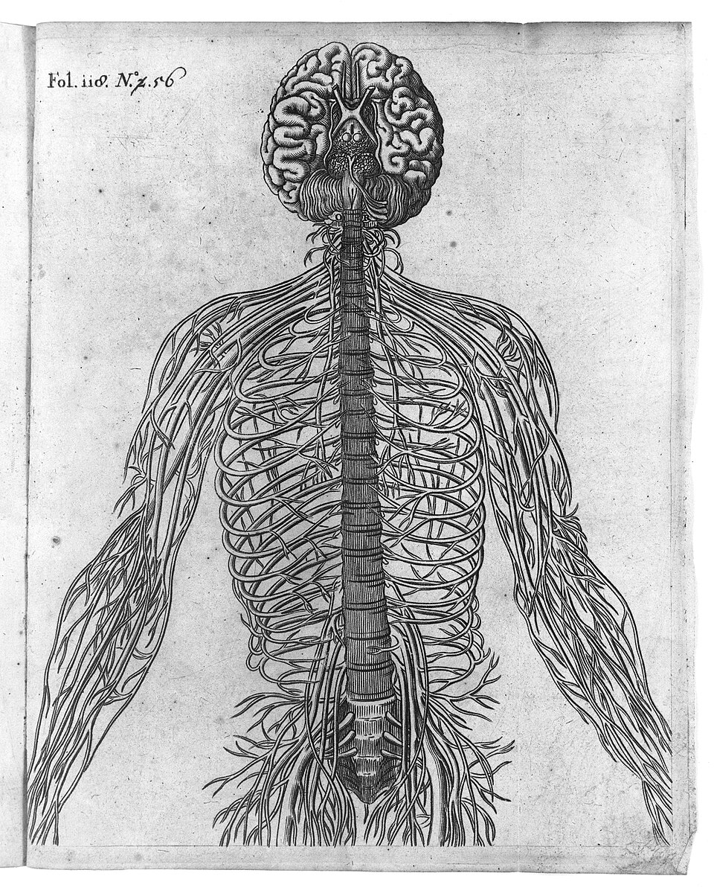

两条判据，原文在此
《谈谈方法》第五部分。笛卡尔先设想一台外形与动作都仿造人类的自动机（automata），然后说：仍有两个"极可靠的手段"能认出它不是真人。
jamais elles ne pourroient user de paroles ni d'autres signes en les composant, comme nous faisons pour déclarer aux autres nos pensées 它们永远不能像我们那样，组合词语或别的符号，来向他人表达自己的思想。 Discours de la méthode，第五部分，1637（Cousin 校订本）
要看清这一条的分量，关键在 en les composant——"通过组合它们"。笛卡尔明确承认机器可以发声、可以对特定刺激给出特定回应（碰它一下它喊疼）。他否认的是组合能力：面对一句从未预备过的话，当场重组语言给出恰当回应。这不是"会说话"，是"会应对"。
au lieu que la raison est un instrument universel qui peut servir en toutes sortes de rencontres, ces organes ont besoin de quelque particulière disposition pour chaque action particulière 理性是一件普遍的工具，能在各种场合派上用场；而那些器官则需要为每一个特定动作配备某种特定的构造。 Discours de la méthode，第五部分，1637（Cousin 校订本）
第二条讲的是覆盖问题：机器的每一种本领都得被单独安装一次，所以再复杂的机器也只是有限张专用表格的集合；人只有一套东西，却能应付无穷多没被预先设想过的场合。

换句话说，这张图就是他的"机器"的完整规格书；而那两条判据，是他划下的规格书覆盖不到的边界。 三百六十年后，这条边界正在被一种他完全无法设想的机器逼近——而逼近它的那台机器，恰恰没有这张图上的任何一根线。 Wellcome Collection · CC BY 4.0
第一条判据，今天怎么了
一台机器"永远不能组合词语来表达思想"——这句话在 1637 年是一个关于物理不可能的断言。今天它不再是了。
这件事最值得玩味的地方在于：把笛卡尔这条判据带进二十世纪语言学的，是诺姆·乔姆斯基。他 1966 年的《笛卡尔语言学》(Cartesian Linguistics) 提出"语言使用的创造性方面"（the creative aspect of language use）——语言的运用不受可辨识的外部刺激或内部状态控制、不限于实用交际，而这一洞见的源头，他明确追溯到笛卡尔。
而在 2023 年 3 月，乔姆斯基与 Ian Roberts、Jeffrey Watumull 在《纽约时报》发表《The False Promise of ChatGPT》，把 1966 年的论点直接对准了大语言模型：人类心智"以有限的手段实现无限的运用"，而 ChatGPT 只是"庞大的统计模式匹配引擎"，靠外部数据的相关性而非内在解释生成语言，因此不满足那道笛卡尔式门槛。
这是一场跨越三百八十六年的同一个论证的第三次出场。你可以不同意它的结论，但要看清它的结构：笛卡尔的两条判据都不是关于"输出像不像人"，而是关于"输出是怎么来的"。行为主义的图灵测试只问前者，笛卡尔问的是后者——所以严格说，一个系统通过图灵测试，并不等于通过笛卡尔测试。
三场处决，和一份翻案状
机器里的幽灵
《The Concept of Mind》第一章标题就叫"笛卡尔的神话"。赖尔说二元论犯的是一种特殊的错误——范畴错误（category mistake）：把心灵和身体放进同一个逻辑类型里去比较，就像有人参观完所有学院、图书馆、实验室之后问"那么大学在哪里"。心灵不是与身体并列的另一样东西，"心灵"是描述行为方式的一整套语汇。 他自己说，用"机器里的幽灵教条"（the dogma of the Ghost in the Machine）这个说法是"故意带侮辱性的"。
脑子里没有剧场
《Consciousness Explained》提出"笛卡尔剧场"（Cartesian theater）这个说法，攻击的靶子叫"笛卡尔式唯物主义"：即使你不再相信非物质的灵魂，你可能仍偷偷相信脑内有一个特定的时空节点，无意识加工在那里"上演"为意识——那就还是留了一个内在观众，只是把幽灵换成了一小团灰质。丹尼特的替代方案是多重草稿模型：意识由脑内多处并行、持续被修订的"草稿"构成，没有定本，也没有"呈现给谁看"的那一刻。
认知不在头骨里
- 梅洛-庞蒂《知觉现象学》(1945)——意识不是世界的超然旁观者，它根本上是具身的；笛卡尔把身体降格成了"众多客体中的一个"。但他并非全盘否定：他在笛卡尔文本里也读出了"身心复合体"这一有价值的洞见。
- Varela, Thompson & Rosch《The Embodied Mind》(1991)——书中专设一节"笛卡尔式焦虑"（the Cartesian anxiety）：人在"必须有一个绝对稳固的知识基础"与"现实彻底没有根基"这两极之间来回摆荡而生的哲学焦虑。他们的解药是生成认知（enaction）。
- Lakoff & Johnson《Philosophy in the Flesh》(1999)——把"知即是见"（Knowing is Seeing）判定为笛卡尔最根本的隐喻，认为正是这个视觉隐喻加上对确定性的渴求，制造了"离身心智"。
- Clark & Chalmers《The Extended Mind》(1998)——对等原则：如果颅外的某个东西在功能上与被算作认知过程的颅内加工对等，它就该被算作认知的一部分。笔记本可以是你的记忆。这是对 res cogitans / res extensa 分界线最直接的一刀。
恶魔的现代版本
第一沉思那个"极有能力、极狡猾的恶魔"，在二十世纪换了两次皮：
缸中之脑
Putnam《Reason, Truth and History》。恶魔换成了一套培养液与电极。但 Putnam 提出它的目的是反驳它：依据语义外在论，词语的指称由使用者的因果环境决定；若我真是缸中之脑，我说的"缸"和"脑"就无法指称真实的缸和脑——"我是缸中之脑"这句话在真的情况下反而说不出口。这是一个语义上自我反驳的假设。
模拟假说
Bostrom《Are You Living in a Computer Simulation?》。恶魔换成了后人类文明的算力。与笛卡尔的关键差别：笛卡尔的恶魔是为了被驳倒而设的——它是方法论工具，不是宇宙论主张；Bostrom 的论证反过来，是要用概率论证让你认真对待这个可能性。
为什么这座站放在书架的第二十六个位置
因为它是很多站的共同上游，也是很多站的共同靶子。你在这座书架上读过的好几套理论，都可以重述为"对笛卡尔的某种回应"：
怀特海
过程哲学的起点就是拆掉笛卡尔的"实体—属性"范畴。你在这一站看到的两个不可通约的实体，在那一站被换成了"事件"。
书架 · 改写拉康
"我思"被拆开重装：拉康把确定性的位置挪走了——主体不在它思考的地方。这一站给你原版，那一站给你它的倒影。
书架 · 对撞佛学
无我 vs 我思。两套体系用几乎相同的方法（系统性内观）走到了完全相反的结论。分歧点不在证据，在于对"我"这个词的用法。
读完这一站，你不会更相信笛卡尔。但你会发现一件更有用的事：你日常用来思考"我是谁"的那套词汇，是有作者、有出版年、有反对者的。 它是被造出来的，因此也是可以被改造的。这比接受或反对任何一个结论都值钱。
DUBITO, ERGO COGITO